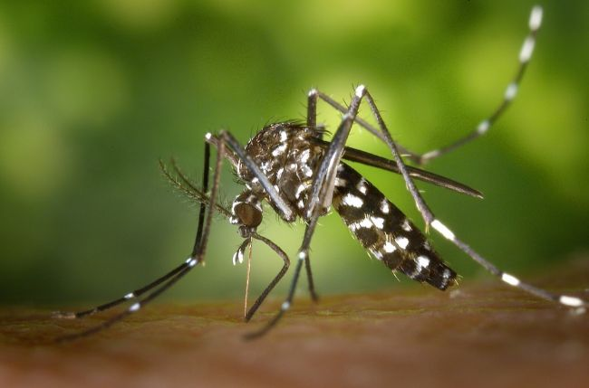
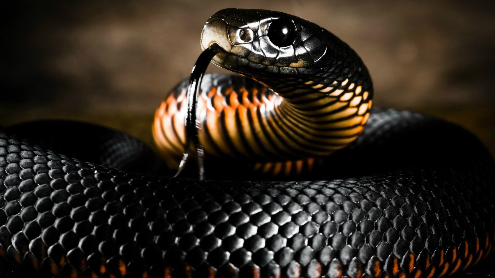
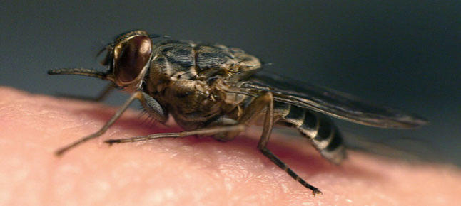
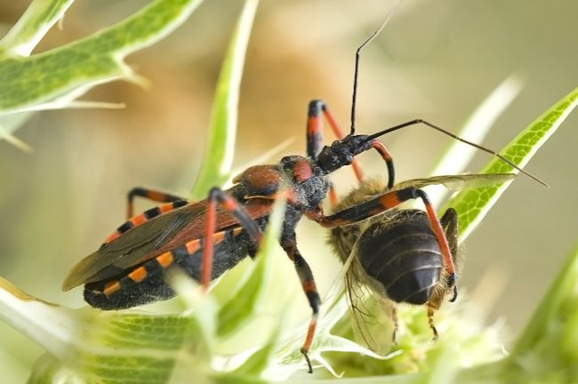
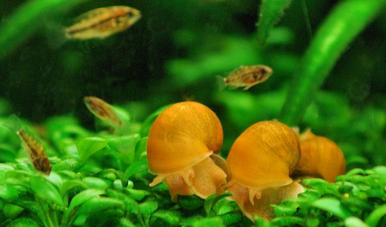
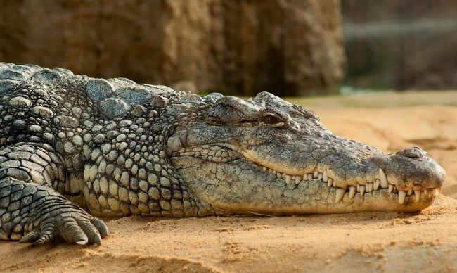
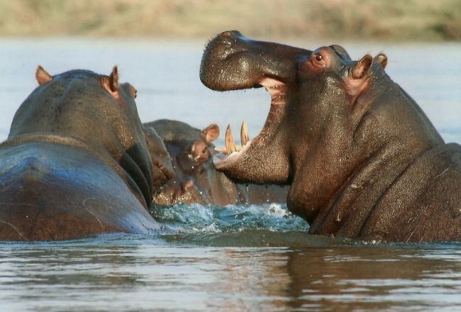
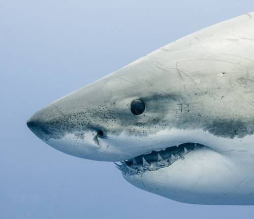

COMPORTAMIENTO
La mayoría de los tiburones son especialmente activos en la tarde y la noche, cuando cazan. Algunos tiburones migran grandes distancias para alimentarse y reproducirse. Esto puede llevarlos por todas las cuencas oceánicas. Aunque algunas especies de tiburones son solitarios, otros muestran un comportamiento social en los distintos niveles, en los tiburones martillo, por ejemplo, se agrupan durante la temporada de apareamiento en torno a los montes submarinos y las islas.
A continuación se va a mostrar una tabla enseñando el poco daño causado a seres humanos en comparación a otros animales:
| ANIMAL | Mosquito | Serpiente | Perro doméstico | Mosca Tse-tse | Chinche asesina | Caracol de agua dulce | Cocodrilo australiano | Hipopótamo africano | Tiburón blanco |
|---|---|---|---|---|---|---|---|---|---|
| FOTOGRAFÍA |  |  |  |  |  |  |  |  | |
| MUERTES ANUALES | 725.000 | 50.000 | 25.000 | 10.000 | 10.000 | 10.000 | 1.000 | 50 | 5 |
Debido a la insuficiencia visual de los tiburones, pueden confundir fácilmente la silueta de una tabla de surf con la de una foca nadando en la superfície.